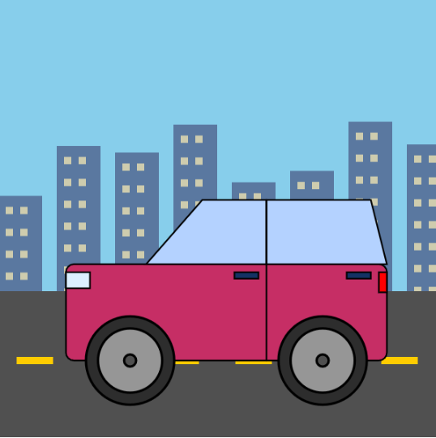
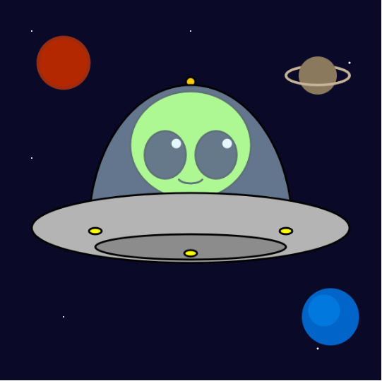
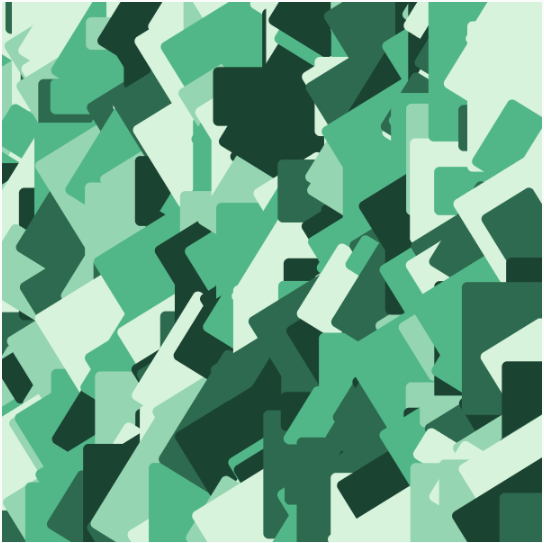
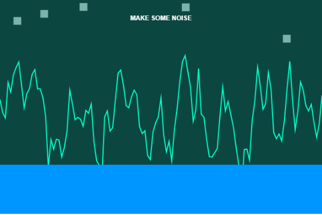

Currently exploring the intersection of art and logic. I build immersive interactive experiences using creative coding, p5.js, and modern digital design systems.
I'm still in the program at the Metaverse Age Training Institute and it has been a tremendous journey. Now I've been coding for about a year and there are a lot of things I've learnt; building for the web is as much about being patient as it is about syntax. I feel like I have had "aha!" moments and a few head-scratching during my time at the Institute. It was intuitive to me in terms of design and layout logic from the beginning because I have a passion for solving a problem by determining the position of a component and creating its behavior.
Let's be honest though, JavaScript - my ultimate "final boss". For instance in some weeks I had the feeling that I was trying to understand some different language than what I was accustomed to, and I was understanding asynchronous functions and very complicated logic gates. The thing I've struggled the most with in my first year is that's what made it the most rewarding. Sometimes when the script doesn't work, you feel this weird sense of being addicted to when it does work without any bugs. It has shown me that being a coder is not about learning everything — it's about being the person not to give up when the console turns red.
On the down side, I'm an unabashed romantic of CSS. JS could be thought of as a set of rules to follow, whereas CSS can be thought of as an open canvas. It's so satisfying to see what comes in direct from styling – to see an otherwise boring skeleton come alive with only some changes to the properties. It is much easier to use and more “human” than any other language. Whether I am creating procedural animation or just tweaking a grid to be responsive or whatever, I feel that I am in fact creating art. Your blend of logic and creativity is the part that gets me hooked daily with coding. There's a sort of calm in a well-stylized stylesheet, at least, regardless of how difficult it may become.
I can't believe it's been a year since I started this! I'm in awe of the code I'm writing today, and if Day 1 had shown me the code I'm writing today, I might have had a panic attack. I'm very proud to see a student develop into being able to design a project, and truly remember taking a confused student from that point to the other. I have found that “hard” parts of coding are simply “small” enough parts that you have not broken them down into. When I hit a wall with a complex feature, I'm reminded that progress is not linear, but FTL's that are winding and non-linear. I am now at a level where I don't just look at code, I see what code can become. Passing an assessment is no longer an objective; it's about creating what is now called "living" things to populate the screen. Going from student to coder is not about being prepared with all the answers, but rather how to get the answers.
There's been been a lot of discussion about this lately: why is it that I gravitate to CSS and find myself drawn to do more and more JavaScript things that are so... "vintage. JS has a lot of baggage with it, sometimes it looks unnecessarily cumbersome and old fashioned when you're just trying to do something simple. But CSS? Today, CSS is a force to be reckoned with. It's second nature to me now to use Grid and Flexbox. I've dedicated hours and hours to perfecting hover states and transitions and I consider the “feel” of a site as important as the code underneath his hood. I believe a site should not only function well, but feel good to use. It's a lot of work coding and a lot of neurons sizzling with logic when I'm working with a stylesheet and playing with colors and spacing, but not this much. It's like I'm hearing my own tongue spoken. I miss nothing of the simplicity if layout is just right - no matter how complicated the web is.




Let’s create immersive digital experiences together.
I'm always looking to connect with other creators. Whether you have a question about my projects at the Metaverse Age Training Institute or just want to talk shop, drop a message!